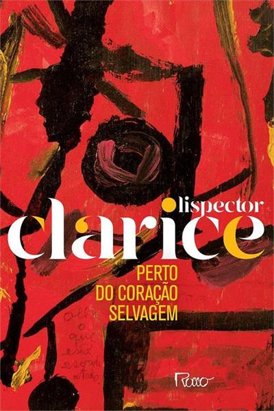
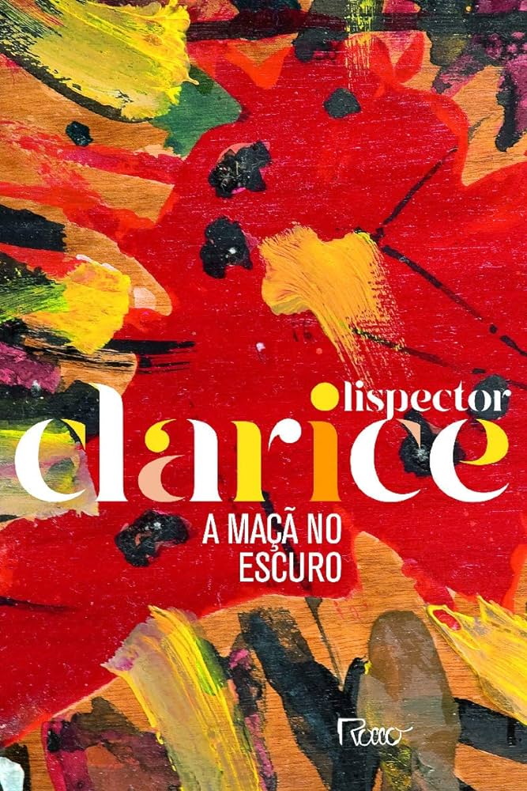
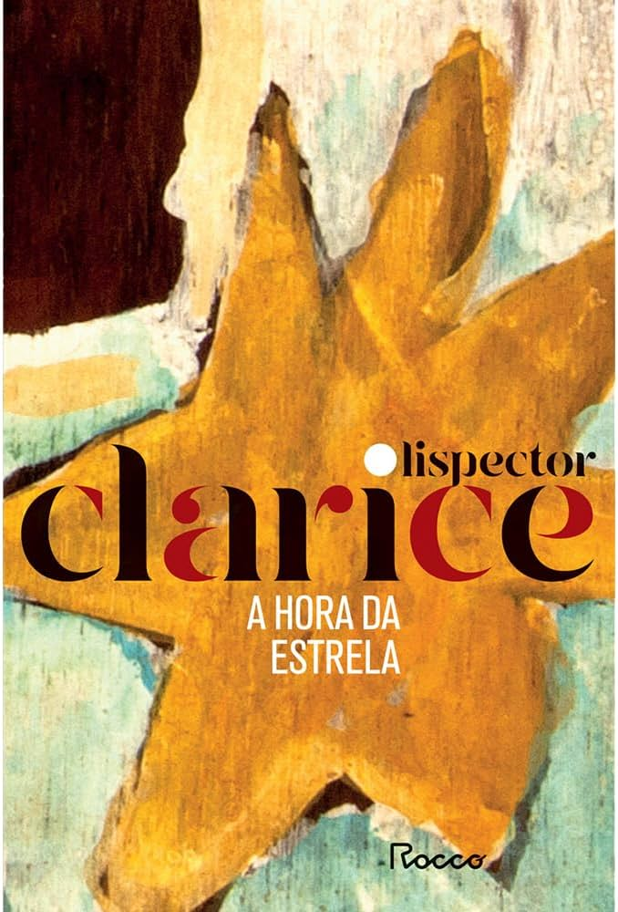

Clarice Lispector
Eu tava estudando literatura brasileira, modernismo do seu período mais atual e eu me
deparo com essa mulher incrível, que apesar de eu nunca ter lido (mas já ter sabido) as suas obras, eu sei
que devem ser das boas.
Algo em mim viu nela algo que palavras não descrevem, eu olhei pra uma
personalidade, um personagem que só vive nas linhas dos livros mais cruéis, que te faz sentir passar por
cada descrição arquitetada com a minuciosidade de um doutor fazendo uma operação de risco em uma noite de
inverno. Tabom, vou deixar a habilidade de escrita pra os profissionais xP .
Assisti sua entrevistas,
depoimentos e frases suas incríveis, como "Enquanto eu tiver corpo ele me submeterá às suas exigências", ou
"Quando entrego me atiro. Quando recuo não volto mais" . É ou não é de se arrepiar? E isso só um bit diante
de vários os livros que ela fez. Vou colocar aqui alguns que eu achei legais.

Perto do coração selvagem (Rocco, 208 pp, R$ 29,90) foi a estreia literária de Clarice Lispector, quando a autora tinha apenas 22 anos de idade, e causou grande impacto, suscitando artigos elogiosos de críticos e escritores. Esse foi um ano fundamental na vida de Clarice, além de publicar o primeiro livro, ela obteve a cidadania brasileira, casou-se e diplomou-se em Direito. O posfácio é de Nádia Battella Gotlib. A leitura é caleidoscópica. A protagonista ora tem uma cor, ora outra, conforme o momento ("real" ou onírico). As cores dançam no enredo misturado ao cenário e às sensações da menina-mulher-amante. Joana desfila na vida dos outros personagens, destilando o veneno de víbora, instilado com ironia e respostas cruéis diante dos fatos. A leitura também é lúdica, quando o leitor tenta adivinhar o que a autora preparou páginas adiante e se surpreende com o que presencia.

Em A maçã no escuro esta chama queima pacientemente enquanto se narra a trajetória de um homem. Um homem, um crime, uma fuga. Como se fosse possível retroceder os ponteiros do relógio, zerar o tempo marcado e, então, começar outra vez. Martim, um fugitivo, começa a se reinventar, a manufaturar o próprio destino: "Ele se tornou o centro do grande círculo e o começo arbitrário de um caminho." A maçã no escuro é um romance dos anos 1950. Realizado durante o tempo em que a autora viveu nos Estados Unidos, foi concluído em Washington, em 1956. Mas só seria publicado em 1961, um ano depois de Laços de família, cujos contos primorosos conquistaram um expressivo público para Clarice Lispector. Os dois livros foram escritos simultaneamente e selam o amadurecimento da escritora.

Pouco antes de morrer, em 1977, Clarice Lispector decide se afastar da inflexão intimista
que caracteriza sua escrita para desafiar a realidade. O resultado desse salto na extroversão é A hora da
estrela, o livro mais surpreendente que escreveu. Se desde Perto do coração selvagem, seu romance de
estreia, Clarice estava de corpo inteiro, todo o tempo, no centro de seus relatos, agora a cena é ocupada
por personagens que em nada se parecem com ela.
A nordestina Macabéa, a protagonista de A hora da estrela, é uma mulher miserável, que mal tem consciência
de existir. Depois de perder seu único elo com o mundo, uma velha tia, ela viaja para o Rio, onde aluga um
quarto, se emprega como datilógrafa e gasta suas horas ouvindo a Rádio Relógio. Apaixona-se, então, por
Olímpico de Jesus, um metalúrgico nordestino, que logo a trai com uma colega de trabalho. Desesperada,
Macabéa consulta uma cartomante, que lhe prevê um futuro luminoso, bem diferente do que a espera.
 Eu me lembro do último livro bem impactante que eu li, que me envolveu em mistérios, segredos e coisas ocultas, se
desenvolvendo em palavras difíceis de se entender mas queriam trocar ideias comigo de uma forma tão íntima,
"O Baú e a Serpente", me fez entrar em contato pela primeira vez em um universo da literatura que só quem é
acostumado consegue viajar nesse passeio estelar. Leitura é uma coisa que sempre me atraiu bastante, mal
vejo a hora de começar a consumir as obras da lendária, com a maçã no escuro.
Eu me lembro do último livro bem impactante que eu li, que me envolveu em mistérios, segredos e coisas ocultas, se
desenvolvendo em palavras difíceis de se entender mas queriam trocar ideias comigo de uma forma tão íntima,
"O Baú e a Serpente", me fez entrar em contato pela primeira vez em um universo da literatura que só quem é
acostumado consegue viajar nesse passeio estelar. Leitura é uma coisa que sempre me atraiu bastante, mal
vejo a hora de começar a consumir as obras da lendária, com a maçã no escuro.